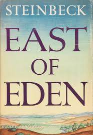

BOOK 17

"East of Eden" by John Steinbeck
Steinbeck apparently considered this 1952 novel to be his magnum opus, the one which all other novels
before it had merely been practice for. The title is suitably grand. Taken from Genesis, the first book of
the Old Testament, it refers to line 4:16, after Cain has slain his brother Abel. And Cain went out from
the presence of the Lord, and dwelt in the land of Nod, on the east of Eden.